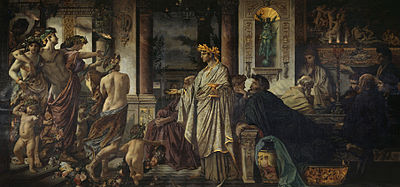

Themes
Plato never presents himself as a participant in any of the dialogues, and with the exception of the Apology, there is no suggestion that he heard any of the dialogues firsthand. Some dialogues have no narrator but have a pure "dramatic" form, some dialogues are narrated by Socrates himself, who speaks in the first person. The Symposium is narrated by Apollodorus, a Socratic disciple, apparently to Glaucon. Apollodorus assures his listener that he is recounting the story, which took place when he himself was an infant, not from his own memory, but as remembered by Aristodemus, who told him the story years ago. The Theaetetus is also a peculiar case: a dialogue in dramatic form embedded within another dialogue in dramatic form. Some scholars take this as an indication that Plato had by this date wearied of the narrated form. In most of the dialogues, the primary speaker is Socrates, who employs a method of questioning which proceeds by a dialogue form called dialectic. The role of dialectic in Plato's thought is contested but there are two main interpretations: a type of reasoning and a method of intuition. Simon Blackburn adopts the first, saying that Plato's dialectic is "the process of eliciting the truth by means of questions aimed at opening out what is already implicitly known, or at exposing the contradictions and muddles of an opponent's position."Karl Popper, on the other hand, claims that dialectic is the art of intuition for "visualising the divine originals, the Forms or Ideas, of unveiling the Great Mystery behind the common man's everyday world of appearances."
Textual Sources and History
During the early Renaissance, the Greek language and, along with it, Plato's texts were reintroduced to Western Europe by Byzantine scholars. Some 250 known manuscripts of Plato survive. In September or October 1484 Filippo Valori and Francesco Berlinghieri printed 1025 copies of Ficino's translation, using the printing press at the Dominican convent S.Jacopo di Ripoli. The 1578 edition of Plato's complete works published by Henricus Stephanus (Henri Estienne) in Geneva also included parallel Latin translation and running commentary by Joannes Serranus (Jean de Serres). It was this edition which established standard Stephanus pagination, still in use today. The text of Plato as received today apparently represents the complete written philosophical work of Plato, based on the first century AD arrangement of Thrasyllus of Mendes. The modern standard complete English edition is the 1997 Hackett Plato, Complete Works, edited by John M. Cooper.
Authencity
Thirty-five dialogues and thirteen letters (the Epistles) have traditionally been ascribed to Plato, though modern scholarship doubts the authenticity of at least some of these. Jowett mentions in his Appendix to Menexenus, that works which bore the character of a writer were attributed to that writer even when the actual author was unknown. The works taken as genuine in antiquity but are now doubted by at least some modern scholars are: Alcibiades I, Alcibiades II, Clitophon, Epinomis, Letters, Hipparchus, Menexenus, Minos, Lovers, Theages. The following works were transmitted under Plato's name in antiquity, but were already considered spurious by the 1st century AD: Axiochus, Definitions, Demodocus, Epigrams, Eryxias, Halcyon, On Justice, On Virtue, Sisyphus.
Chronology
No one knows the exact order Plato's dialogues were written in, nor the extent to which some might have been later revised and rewritten. The works are usually grouped into Early (sometimes by some into Transitional), Middle, and Late period; The following represents one relatively common division.
- Early: Apology, Charmides, Crito, Euthyphro, Gorgias, Hippias Minor, Hippias Major, Ion, Laches, Lysis, Protagoras
- Middle: Cratylus, Euthydemus, Meno, Parmenides, Phaedo, Phaedrus, Republic, Symposium, Theatetus
- Late: Critias, Sophist, Statesman, Timaeus, Philebus, Laws.
Whereas those classified as "early dialogues" often conclude in aporia, the so-called "middle dialogues" provide more clearly stated positive teachings that are often ascribed to Plato such as the theory of Forms. The remaining dialogues are classified as "late" and are generally agreed to be difficult and challenging pieces of philosophy. It should, however, be kept in mind that many of the positions in the ordering are still highly disputed, and also that the very notion that Plato's dialogues can or should be "ordered" is by no means universally accepted, though Plato's works are still often characterized as falling at least roughly into three groups stylistically.

Unwritten doctrines
Plato's unwritten doctrines are, according to some ancient sources, the most fundamental metaphysical teaching of Plato, which he disclosed only orally, and some say only to his most trusted fellows, and which he may have kept secret from the public, although many modern scholars doubt these claims. A reason for not revealing it to everyone is partially discussed in Phaedrus where Plato criticizes the written transmission of knowledge as faulty, favouring instead the spoken logos: "he who has knowledge of the just and the good and beautiful ... will not, when in earnest, write them in ink, sowing them through a pen with words, which cannot defend themselves by argument and cannot teach the truth effectually."It is, however, said that Plato once disclosed this knowledge to the public in his lecture On the Good (Περὶ τἀγαθοῦ), in which the Good (τὸ ἀγαθόν) is identified with the One (the Unity, τὸ ἕν), the fundamental ontological principle.
The first witness who mentions its existence is Aristotle, who in his Physics writes: "It is true, indeed, that the account he gives there [i.e. in Timaeus] of the participant is different from what he says in his so-called unwritten teachings (Ancient Greek: ἄγραφα δόγματα, romanized: agrapha dogmata)."In Metaphysics he writes: "Now since the Forms are the causes of everything else, he [i.e. Plato] supposed that their elements are the elements of all things. Accordingly, the material principle is the Great and Small [i.e. the Dyad], and the essence is the One (τὸ ἕν), since the numbers are derived from the Great and Small by participation in the One". "From this account it is clear that he only employed two causes: that of the essence, and the material cause; for the Forms are the cause of the essence in everything else, and the One is the cause of it in the Forms. He also tells us what the material substrate is of which the Forms are predicated in the case of sensible things, and the One in that of the Forms – that it is this the duality (the Dyad, ἡ δυάς), the Great and Small (τὸ μέγα καὶ τὸ μικρόν). Further, he assigned to these two elements respectively the causation of good and of evil".
Reception
Plato's thought is often compared with that of his most famous student, Aristotle, whose reputation during the Western Middle Ages so completely eclipsed that of Plato that the Scholastic philosophers referred to Aristotle as "the Philosopher". The only Platonic work known to western scholarship was Timaeus, until translations were made after the fall of Constantinople, which occurred during 1453. However, the study of Plato continued in the Byzantine Empire, the Caliphates during the Islamic Golden Age, and Spain during Golden age of Jewish culture. Plato is also referenced by Jewish philosopher and Talmudic scholar Maimonides in his The Guide for the Perplexed.
Criticism
Many recent philosophers have also diverged from what some would describe as ideals characteristic of traditional Platonism. Friedrich Nietzsche notoriously attacked Plato's "idea of the good itself" along with many fundamentals of Christian morality, which he interpreted as "Platonism for the masses" in Beyond Good and Evil (1886). Martin Heidegger argued against Plato's alleged obfuscation of Being in his incomplete tome, Being and Time (1927), and the philosopher of science Karl Popper argued in the first volume of The Open Society and Its Enemies (1945) that Plato's alleged proposal for a utopian political regime in the Republic was prototypically totalitarian. Edmund Gettier famously demonstrated the problems of the justified true belief account of knowledge. That the modern theory of justified true belief as knowledge, which Gettier addresses, is equivalent to Plato's is accepted by some scholars but rejected by others.